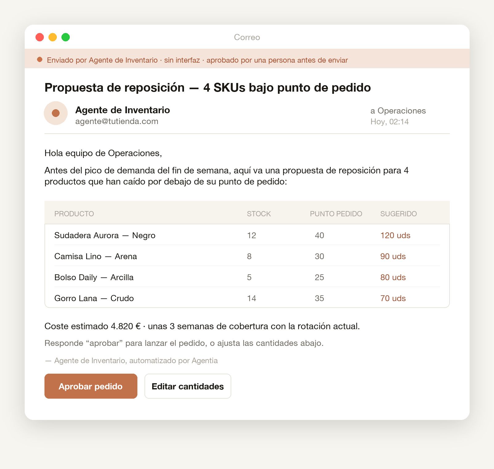

Administrative Operations Agent
Gestiona tareas administrativas recurrentes, entrada de datos, routing de documentos, updates de estado y follow-ups internos.
Diseñamos, construimos y gestionamos agentes de IA que asumen trabajo operativo repetitivo.
Managed Operations
Tu equipo no está corto de talento. Está atrapado en operación.
Administración, documentos, inboxes, aprobaciones, reporting y follow-ups consumen horas que deberían ir a producto, ventas y crecimiento. Convertimos ese trabajo repetitivo en jobs operativos ejecutados por agentes, con supervisión humana y resultados visibles.
Identificamos los jobs operativos que frenan tu empresa, diseñamos el flujo objetivo, construimos los agentes y herramientas necesarios, y gestionamos el sistema en el tiempo. No automatizaciones sueltas. No experimentos. Operación gestionada, visible y medible.
Mapeamos los jobs operativos que consumen tiempo en tu empresa.
Definimos proceso, responsabilidades, checkpoints humanos, integraciones y métricas.
Implementamos agentes, herramientas y workflows para ejecutar el job en producción.
Monitorizamos rendimiento, incidentes, prompts, calidad y mejora continua.
Agentia Workspace muestra trabajo ejecutado, resultados y capacidad creada.
VisibleAlgunos conversan con equipos internos. Otros ejecutan trabajo en segundo plano dentro de tus sistemas. Todos tienen responsabilidades claras, límites, checkpoints humanos y métricas de resultado.
Conectamos tus asistentes al contexto real de tu empresa.
Conectamos ChatGPT, Claude o tu asistente preferido a procesos, documentos y conocimiento interno para que el equipo avance con menos fricción.

Agentes en segundo plano para el trabajo operativo repetitivo.
Ejecutan trabajo recurrente en administración, finanzas, documentos, inboxes, reporting y coordinación interna para liberar capacidad sin aumentar plantilla.

Gestiona tareas administrativas recurrentes, entrada de datos, routing de documentos, updates de estado y follow-ups internos.
Procesa facturas, clasifica gastos, prepara conciliaciones y apoya flujos contables.
Clasifica solicitudes internas, redacta updates, enruta tareas y escala excepciones.
Lee, extrae, clasifica y resume documentos, contratos, PDFs, formularios y archivos internos.
Monitoriza inboxes compartidos, clasifica mensajes, redacta respuestas y enruta tareas.
Sigue pedidos, coordina proveedores, actualiza sistemas y alerta cuando algo se bloquea.
Recoge datos operativos, prepara informes semanales y señala anomalías.
Responde preguntas del equipo usando documentos, SOPs, políticas y conocimiento interno.
Agentia Workspace
Los agentes solo generan confianza cuando su trabajo es visible. Agentia Workspace da a cada cliente una vista privada de su operación gestionada por agentes: agentes activos, jobs cubiertos, resultados procesados, horas liberadas, estado, incidencias, uso y oportunidades de expansión.

Cada agente tiene responsabilidades, permisos y límites definidos antes de operar.
Los checkpoints humanos se diseñan para aprobaciones, excepciones y decisiones sensibles.
Seguimos jobs completados, horas liberadas, incidencias, uso mensual y expansión posible.
Data centers en la UE, cumplimiento GDPR, Zero Data Retention para modelos LLM y cifrado de datos.
Use cases
No intentamos cubrirlo todo. Empezamos por casos concretos como back office administrativo, finanzas, documentos, inboxes y reporting.
Facturas, gastos, conciliaciones, aprobaciones y seguimiento.
Bandejas compartidas, routing, aprobaciones, updates de estado y coordinación interna.
Lectura, extracción, clasificación y revisión de archivos.
Estados, follow-ups, incidencias y comunicación operativa.
CRM, preparación de datos, follow-ups y handoffs comerciales.
Informes semanales, anomalías, métricas y updates de dirección.
Respuestas basadas en SOPs, políticas, documentación y procesos.
Pricing
El pricing se basa en dos pilares: una fase inicial de discovery e implementación y una operación mensual gestionada, todo adaptado a tu caso de uso.
Identificamos el primer job operativo de alto valor, diseñamos el workflow y lo llevamos a producción con supervisión y métricas.
Operación mensual para consumo, monitorización, mantenimiento, mejoras, incidencias, visibilidad en Agentia Workspace, despliegue de nuevos agentes y workshop trimestral de 3h.
Las plataformas de agentes conversacionales, como ChatGPT o Claude, no están incluidas en el pricing de Agentia.
¿Listo para liberar capacidad operativa? Reserva una demo e identificaremos un primer job donde tus agentes puedan crear capacidad medible en las próximas semanas.
Reserva una demoReserva una demo
Cuéntanos el contexto mínimo y revisaremos contigo qué trabajo operativo puede convertirse primero en capacidad gestionada por agentes.
Primero cualificamos el caso, después agendamos una conversación útil.